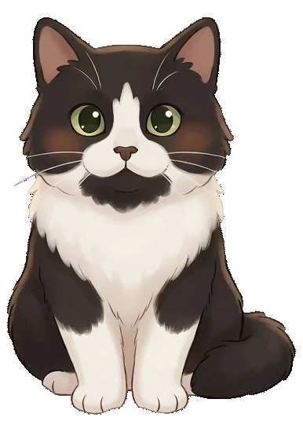

nest_clock_farsight_analog
DoroDoro
settings
close
Setup Session
Ready for some deep work?
menu_book
potted_plant
Focus
expand_less
expand_more
coffee
Break
expand_less
expand_more
autorenew
Cycles
expand_less
expand_more

play_circle
Start Session
DoroDoro
settings
close
FOCUS
25:00
pause
Pause
stop
Stop
DoroDoro
settings
close
BREAK
05:00
Time to rest
pause
Pause
stop
Stop
Settings
arrow_back
close
Theme
light_mode
Ñoqui
deceased
Chloe
tsunami
Max
dark_mode
Black
Language
ES
EN
Volume
volume_mute
volume_up
Hecho con <3 para Paula
Creado por
Javier